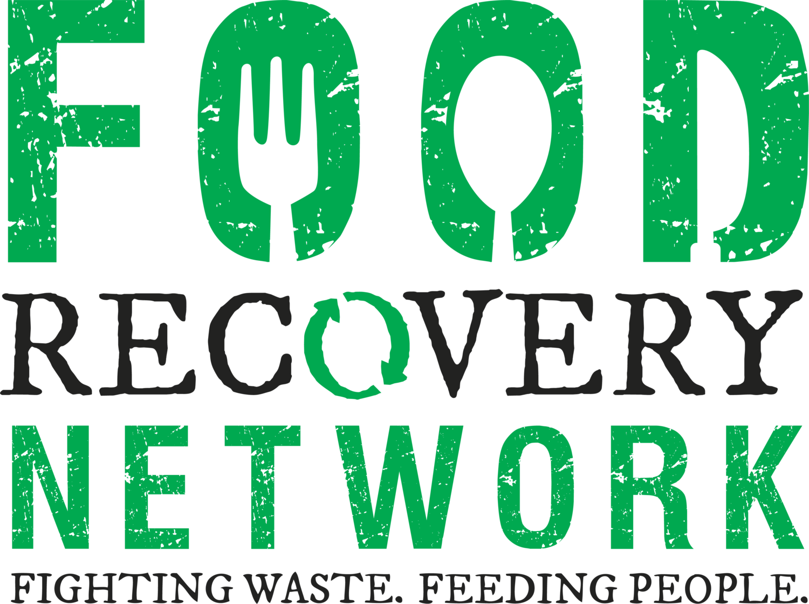

Nowadays we are facing numerous challenges across the world. We are aware of global warming, air pollution, environmental accidents. But there are still plenty of issues we are not aware such as Food Waste.
While many of us lucky enough to have some food on our dining table, the reality for millions upon millions of people around the world is that they simply do not have any food to eat.
While we should be grateful for what we have, our relationship with food waste is often shows the opposite. And this relationship is the source for the problems on a global scale. Most of the European countries already started to take actions and now it is the time to address this issue in Taiwan.
There are many different restaurants, cafes, bakeries, stores etc. have to throw delicious, perfectly edible food at the end of the day to make fresh ones next day. Restaurants will have to register in our app, with their menu, photos, ratings/reviews and address and will show the "distance from you". This app will also help them to do the self-promotion. They will place the left overs in a mystery boxes/bags and set a price (25-50% of the original price) or customers may leave their desired amount of money. As for user(customer), they will search through the list and pick a restaurant and will see the available time for pick up.